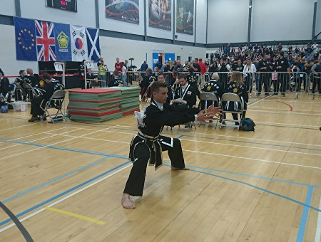
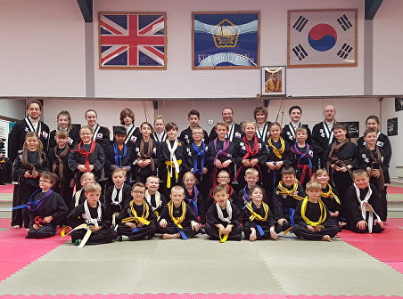

Martial Arts School
Telephone Number: 07545 239300 or 07957 961877


The school was established in Kings Lynn in 1999; It moved to its current location in October 2006. We welcome new students to be a part of our extended Martial Arts Family. At our school we teach the traditional values of Martial Arts with an upbeat, enthusiastic, modern approach. This Kuk Sool Won combines kicking and punching, throwing, falling, joint locking, pressure points, meditation and weapons techniques into a beautiful and dynamic hard/soft style that is sure to meet your physical and mental goals on an individualised basis.
Our professional school offers daytime and evening classes allowing you the flexibility to fit Kuk Sool Won training around family and work committments. Some of the benefits of training include - fitness by strengthening and stretching, a strong body and focused mind, increased confidence, self dicipline, better co-ordination, stress & tension reduction, respect for self and others, better stamina and self defence skills. Please see the classes for more information about what you will be doing, or call us on the contact information